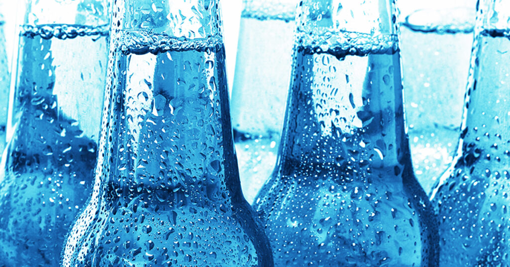

Before yeast. Before hops. Before malt. There is water — and not just any water, but water with a specific mineral fingerprint that, in many cases, literally created the beer style you are drinking. Burton-on-Trent built the India Pale Ale not because its brewers were uniquely talented, but because the town sat above one of the most sulfate-rich aquifers in the world. The water did not follow the style. The style followed the water.
The Six Key Minerals
Six minerals matter most in brewing water: calcium, magnesium, sodium, chloride, sulfate, and bicarbonate. Calcium is the most universally beneficial — it aids enzyme activity during mashing, promotes yeast health, precipitates oxalate (which can cause haze), and helps clarify finished beer. Target 50–150 mg/L in almost all styles. Magnesium contributes a harsh, astringent bitterness at high levels and is generally kept below 30 mg/L. Sodium in small quantities enhances malt fullness and smoothness, but above 150 mg/L it creates an unpleasant mineral saltiness. Bicarbonate has the most dramatic effect on pH — high bicarbonate raises mash pH, which reduces fermentability and increases perceived harshness in the finished beer. It must be carefully managed in all brewing profiles.
"Burton water built the IPA. Pilsen water built the lager. The water did not follow the beer — the beer followed the water." — Hari Kiran, Head Brewer
Five Great Brewing Water Cities
The mineral profiles of five historic brewing cities shaped five great beer traditions. Burton-on-Trent, England, with its extraordinarily high sulfate content (600–800 mg/L), produces a hard, dry, minerally water that amplifies hop bitterness and produces the distinctive "Burton snatch" — a brief sulfurous flash on the nose considered a hallmark of authentic Burton-style pale ale. Pilsen, Czech Republic, sits at the complete opposite extreme: near-distilled softness, almost zero dissolved minerals. This allows malt sweetness to come through completely unimpeded by mineral interference, producing the delicately rounded character that defines Bohemian pilsner. Dublin's water is characterised by high bicarbonate content, which buffers roasted grain acidity and creates the soft, full mouthfeel that defines Irish Stout.

Five Cities, Five Water Profiles
- Burton, England: Sulfate 600–800 mg/L — extremely dry, hop bitterness amplified
- Pilsen, Czech Rep: Near-zero minerals — soft, malt-forward, delicate
- Dublin, Ireland: High bicarbonate — buffers roast, ideal for stout
- Munich, Germany: Moderate calcium carbonate — suits amber lagers, wheat
- London, England: Moderately hard, some sulfate — suits porter and bitter
The Sulfate-to-Chloride Ratio
The most practically useful number in brewing water chemistry is not any individual mineral — it is the ratio of sulfate to chloride. A sulfate-to-chloride ratio above 2:1 produces a beer that tastes dry, crisp, and hop-forward. The bitterness is accentuated; the finish is clean and quick. A ratio below 1:2 — more chloride than sulfate — produces a beer that tastes full, soft, and malt-forward. The bitterness becomes rounder and less aggressive; the body is more substantial. The skill of water treatment is essentially the skill of targeting this ratio precisely for the beer you are brewing.
How We Adjust Water at Mash & Ale
Our source water here in Hyderabad, Telangana, India, California, is moderately hard with a sulfate-to-chloride ratio close to 1:1 — a neutral profile that requires adjustment for most of our recipes. For Pacific Divide IPA, we add calcium sulfate (gypsum) to push sulfate toward 200–250 mg/L, and keep chloride below 60 mg/L. For our Oatmeal Stout, we flip the ratio using calcium chloride additions, target chloride of 120–150 mg/L, and add a small amount of bicarbonate to buffer the roasted malt acidity. The pH target is 5.2–5.4 for the mash in both cases — this sweet spot maximises enzyme activity and produces the cleanest, most fermentable wort. Every batch is treated individually. There is no universal water profile at Mash & Ale.